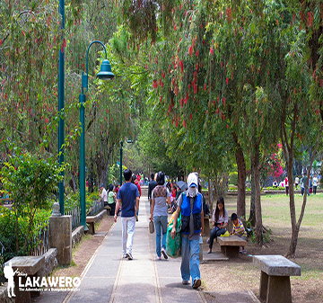

Top Destinations

Burnham Park
Burnham Park is centered around a man-made lake located at the heart of the city. It was named after the city's planner, Daniel Burnham. The park is a favorite place of local residents and visitors alike. There are different facilities for recreation and relaxation that are available in the park. You can row a boat, have a picnic, attend an outdoor concert, watch a football game, go biking, or just take a leisurely stroll around the park. Burnham Park is an ideal place for taking photographs and a visitor should bring along a camera when going to the park. If in case you forget to bring a camera during your visit, there are commercial photographers in the park who can take your pictures. Pictures are usually delivered to you within just a few hours. It is best to determine and agree on the fee for the services of the photographer and the cost of the photographs before committing yourself to one.
Mines View
A ridge located at the extreme northeast side of the city, past The Mansion and Wright Park, Mines View Park boasts of a spectacular view of Benguet's gold and copper mines and the Cordillera mountains. The main attractions in Mines View Park nowadays would be the commercial activities such as the souvenir and silverworks stores by the park. The one especially worth visiting is Rimando's, that offers the best carved artifacts, on the Gibraltar side. Tourists also have a chance to get dressed in full Cordillera regalia -- bahag, shield and spear for the men, tapis for the ladies, vests and headdresses for both. There is no doubt that the Mines View Park is one of the most popular and most visited park in the city!
Lion's Head - Camp 6
The lion's head along Kennon Road is the undisputed landmark that is synonymous to Baguio City. It is commonly said that a trip to Baguio City would not be complete without taking home a souvenir photograph with the famous lion head which serves as the backdrop on Kennon Road. Local and foreign tourists make it a point to stop in Camp 6 and have their photographs taken at the base of the lion head. The 40-foot high lion head, located a few kilometers from the Kennon Road view deck, was carved by a Cordillera artist from a limestone boulder. Lions Club members of Baguio City thought of creating a symbol that would proclaim the presence of the group in this mountain resort city. Just beside the lion head are a few small stalls that sell woodcarving and other native handicraft. Softdrinks and light snacks are also sold to visitors who take time to stop and take a break after the 45-minute drive up Kennon Road. The vendors have enjoyed high sales since this popular landmark was constructed.
Peanut Brittle
A trip to Baguio will never be complete without bringing home this Peanut Brittle, it is a type of confection prepared with sugar, corn syrup, peanuts, and butter that has the flavor of buttery, caramelized sugar surrounding a flat layer of peanuts.
The candy is quite hard and brittle.Throughout the years, these remains to be the top choice of pasalubong from the City of Pines.

Lengua De Gato
Lengua de Gato are long thin cookies that resembles the shape of a cat’s tongue. This might be the reason why these tasty treats were called such.